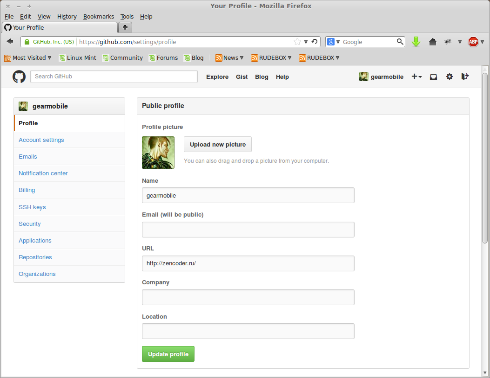
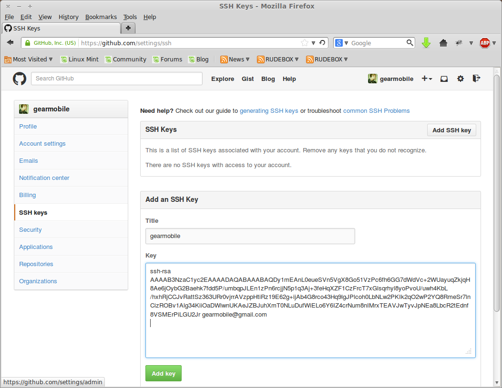
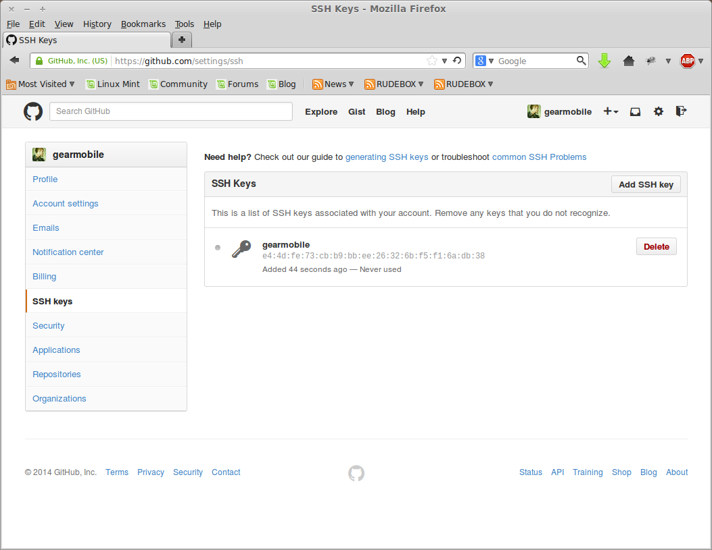
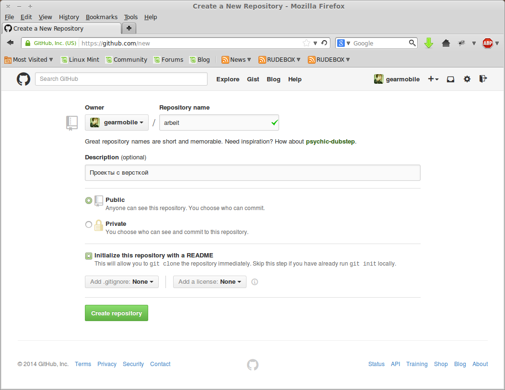

Данная статья является попыткой осмыслить (в первую очередь для себя, конечно) такой вопрос, как создание git-репозитория на GitHub, клонирование этого репозитория на локальный компьютер, внесение изменений в клонированный репозиторий, отправка изменений обратно на GitHub.
Вот такие получаются шаги, которые нужно осветить. Profit у всех этих сложностей, описанных мною выше, один - но большой! Заключается он в том, что проект, над которым вы работаете (даже в гордом одиночестве) находится на удаленном сервере, к которому можно подключиться из любого места и с любой машины. Так как он находиться на remote server, то с ним ничего не случиться, даже если ваша машина упадет\утонет\разобьется.
В статье большая часть времени будет посвящена автоматизации процесса авторизации на сервисе GitHub с помощью такой вещи, как ssh-ключи. Такие ключи предназначены как раз для возможности авторизации пользователя на каком-либо сервисе, без необходимости каждый раз вводить логин\пароль. Естественно, на стороне сервиса должна быть настроена такая возможность - на GitHub она настроена и даже является почти обязательным условием настройки аккаунта.
Все действия, описанные в этой статье, будут производиться под операционной системой Linux Mint 17 Cinnamon, в консоли. Поэтому пользователи Mac OS X найдут для себя почти все идентичным. Система Windows остается в стороне.
Первоначально необходимо создать (если их еще нет) ssh-ключи, которые будем использоваться для авторизации на GitHub. В системе Linux такие ключи расположены в домашней директории пользователя и выглядят примерно так:
$ ls ~/.ssh
id_rsa id_rsa.pub known_hosts
Один из этих ключей
|
1 |
id_rsa |
- это приватный ключ, который должен храниться только у пользователя. Другой ключ
|
1 |
id_rsa.pub |
- это публичный ключ, который предоставляется всем и который я отправлю на GitHub. Представленные выше имена ключей являются создаваемыми по умолчанию, но можно указать и свои собственные.
Если показанная выше команда “скажет” вам, что директории
|
1 |
.ssh |
не существует, то это означает, что у вас с системе установлен пакет SSH, отвечающий за создание и обработку ssh-ключей.
Под Linux Mint его нужно установить командой:
$ sudo apt-get install ssh
Теперь можно приступать к созданию пары ssh-ключей. Выполняется это командой:
$ ssh-keygen -t rsa -C "g***e@gmail.com"
Чтобы было немного понятно, что это я сделал в данной команде, немного расшифрую ее. Утилита
|
1 |
ssh-keygen |
входит в комплект пакета
|
1 |
ssh |
и предназначена для одной цели - создания ssh-ключей. Часть команды -
|
1 |
-t rsa |
- указывает, что необходимо создать ssh-ключи типа
|
1 |
rsa |
.
Обязательный параметр
|
1 |
"g***e@gmail.com" |
- электронный адрес, к которому “привязывается” создаваемый ssh-ключ; данный email будет также использоваться мною для регистрации на GitHub.
Как только будет введена представленная выше команда, утилита
|
1 |
ssh-keygen |
запросит имя файла и местоположение для создаваемых ssh-ключей. Можно ничего не вводить, а просто нажать Enter. В этом случае программулька создаст и положит их по пути по умолчанию (который показан ею в скобочках):
$ ssh-keygen -t rsa -C "g***e@gmail.com"
Generating public/private rsa key pair.
Enter file in which to save the key (/home/aaron/.ssh/id_rsa):
Утилита задаст еще один вопрос, который крайне не рекомендуется игнорировать:
$ ssh-keygen -t rsa -C "g***e@gmail.com"
Generating public/private rsa key pair.
Enter file in which to save the key (/home/aaron/.ssh/id_rsa):
Enter passphrase (empty for no passphrase):
Здесь
|
1 |
passphrase |
- это пароль к создаваемым ssh-ключам. Каждый раз, когда придется использовать эти ключи, нужно вводить данный пароль. Это обезопасит их в случае кражи. В качестве пароля можно использовать любую текстовую строку.
После успешного ввода
|
1 |
passphrase |
ssh-ключи будут созданы:
$ ssh-keygen -t rsa -C "g***e@gmail.com"
Generating public/private rsa key pair.
Enter file in which to save the key (/home/aaron/.ssh/id_rsa):
Enter passphrase (empty for no passphrase):
Enter same passphrase again:
Your identification has been saved in /home/aaron/.ssh/id_rsa.
Your public key has been saved in /home/aaron/.ssh/id_rsa.pub.
В состав пакета
|
1 |
ssh |
входит утилита
|
1 |
ssh-agent |
, задача которой в управлении созданными ssh-ключами. Передадим ей в пользование только созданные мною ssh-ключи:
$ eval "$(ssh-agent -s)"
Agent pid 17461
$ ssh-add ~/.ssh/id_rsa
Enter passphrase for /home/aaron/.ssh/id_rsa:
Identity added: /home/aaron/.ssh/id_rsa (/home/aaron/.ssh/id_rsa)
Можно посмотреть, что утилита
|
1 |
shh-add |
“подхватила” и распознала предоставленные ею ssh-ключи:
$ ssh-add -l
2048 e4:4d:fe:73:cb:b9:bb:ee:26:32:6b:f5:f1:6a:db:38 /home/aaron/.ssh/id_rsa (RSA)
Под операционную систему Linux имеется консольная утилита
|
1 |
xclip |
, которая умеет получать содержимое любого файла и отправлять это содержимое в буфер обмена, и все это в консоли. По умолчанию такой утилиты нет в системе (в том числе и у меня), поэтому первоначально установлю ее:
$ sudo apt-get install xclip
… а затем передам ей на вход содержимое публичного ключа
|
1 |
id_rsa.pub |
, который буду применять на сервисе GitHub:
$ xclip -sel clip < ~/.ssh/id_rsa.pub
Если вам, уважаемый читатель, такой путь покажется слишком сложным, то можно открыть файл
|
1 |
id_rsa.pub |
в любом редакторе кода и скопировать его содержимое в буфер обмена.
Добавление ssh-ключа на GitHub
Переходим на сервис GitHub и создаем на нем новую учетную запись. Описывать процесс создания такой записи на GitHub не буду, так как там все просто. Более интересный момент - это добавление ssh-ключа в профиль пользователя GitHub.
Для этого нажимаю на значок шестеренки в правом верхнем углу окна браузера - настройки профиля пользователя. В открывшемся окне (в его левой части) находим строку
|
1 |
SSH key |
и нажимаем ее:

Откроется окно для добавления новых ssh-ключей в учетную запись пользователя на GitHub. Здесь все элементарно просто - нажимаем кнопку
|
1 |
Add SSH key |
. В поле
|
1 |
Title |
вводим название (произвольное) для импортируемого ssh-ключа.
В поле
|
1 |
Key |
просто нажимаем Ctrl+V - содержимое буфера обмена (которое я получил ранее с помощью утилиты
|
1 |
xclip |
) вставиться в это поле:

Жму на зеленую кнопку
|
1 |
Add key |
внизу окна. Ключ добавлен на GitHub и появиться в списке SSH-ключей:

Проверка SSH-соединения с GitHub
В предыдущих шагах мною были созданы пара ssh-ключей, а также учетная запись на GitHub. В эту учетную запись был импортирован публичный ssh-ключ. Теперь неплохо было бы проверить, что все шаги пройдены мною успешно и ssh-связь с сервисом GitHub устанавливается. Проще сказать - что сервис GitHub авторизует меня у себя с помощью ssh-ключей.
Для этой цели ввожу команду:
$ ssh -T git@github.com
The authenticity of host 'github.com (192.30.252.131)' can't be established.
RSA key fingerprint is 16:27:ac:a5:76:28:2d:36:63:1b:56:4d:eb:df:a6:48.
Are you sure you want to continue connecting (yes/no)? yes
На ошибку в строке
|
1 |
The authenticity of host 'github.com (192.30.252.131)' can't be established. |
не стоит обращать внимание. В запросе командной строки печатаем
|
1 |
yes |
и получаем:
Warning: Permanently added 'github.com,192.30.252.131' (RSA) to the list of known hosts.
Hi gearmobile! You've successfully authenticated, but GitHub does not provide shell access.
Отлично! GitHub “узнал” меня и поприветствовал в строке
|
1 |
Hi gearmobile! You've successfully authenticated, but GitHub does not provide shell access. |
. Это говорит о том, что ssh-соединение моей машины с GitHub установлено успешно и GitHub авторизует меня.
Однако, при настройке ssh-соединения возможны и ошибки. В этом случае может помочь статья - Error: Permission denied (publickey).
Создание нового репозитория на GitHub
Создаем новый репозиторий на GitHub. Ввожу новое уникальное имя для репозитория, краткое его описание и включаю галочку “Initialize this repository with a README”:

Отлично! На GitHub я только что создал новый репозиторий
|
1 |
arbeit |
. Теперь можно скопировать (склонировать) его на свою локальную машину командами:
$ mkdir arbeit
$ git clone git@github.com:gearmobile/arbeit.git
*Моя редакция
git clone git@github.com:alensav/mytetra.git
Cloning into 'arbeit'...
Warning: Permanently added the RSA host key for IP address '192.30.252.130' to the list of known hosts.
remote: Counting objects: 3, done.
remote: Compressing objects: 100% (2/2), done.
remote: Total 3 (delta 0), reused 0 (delta 0)
Receiving objects: 100% (3/3), done.
Checking connectivity... done
Переходим в локальную копию репозитория
|
1 |
arbeit |
. Вношу изменения, а затем последовательно:
$ git add .
$ git commit -m 'Added changes'
$ git push
Команда
|
1 |
git commit -m 'Added changes' |
фиксирует изменения в локальном репозитории. Команда
|
1 |
git push |
*Моя редакция
git push --set-upstream MyTetra1 master
отправляет внесенные и зафиксированные изменения в локальном репозитории на удаленный репозиторий.
Вот, таким образом я наладил Git-работу своей машины с GitHub.